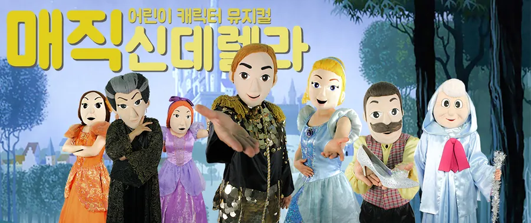

01
매직 신데렐라
등장인물 · 신데렐라, 샤롤왕자, 제럴드, 요정할머니, 마부, 계모, 첫째언니, 둘째언니
친절하고 상냥한 아름다운 신데렐라는 마음씨 나쁜 새 엄마와 시기심 많은 언니들의 구박을 받으면서도 희망을 잃지 않았다. 친구들이라고는 생쥐뿐이지만 그들은 무슨 일이든 신데렐라를 도왔고, 왕자님의 무도회가 열리던 날에는 착한 요정할머니가 나타나 신데렐라에게 아름다운 드레스와 호박으로 만든 마차를 준비해 주었을 때에도 말이 되어 신데렐라와 함께 동행한다. 궁전의 무도회에 참석해서 멋진 왕자님을 만난 신데렐라. 하지만, 시계가 12시를 가리키자 마법은 풀려나고 신데렐라는 유리구두 한짝을 떨군 채 왕자님에게 인사도 못하고 도망치듯 궁전을 빠져나온다. 신데렐라의 이름도 모른 채 헤어진 왕자는 유리구두에 발이 맞는 아가씨를 찾아 온 나라의 아가씨들에게 구두를 신겨본다. 과연 구두의 주인을 찾을 수 있을까요?